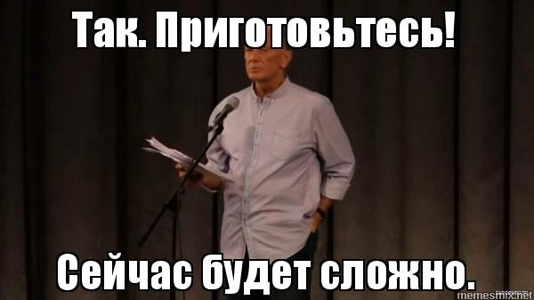
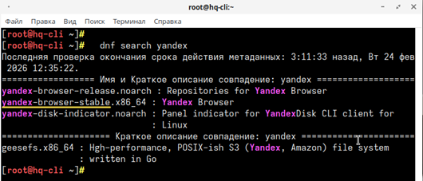

¶ Задание
11. Удобным способом установите приложение Яндекс Браузер на HQ-CLI
- Установку браузера отметьте в отчёте.
¶ Реализация

Ищем название пакета Яндекс браузера

Устанавливаем Яндекс браузер:
После установки Яндекс.Браузер доступен «Главного меню» -> «Интернет» -> «Yandex Browser».